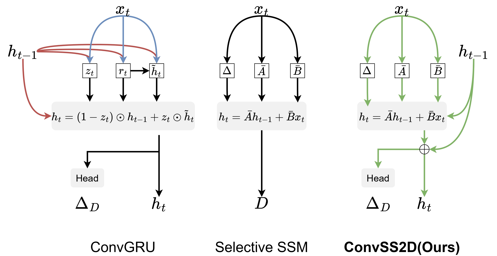
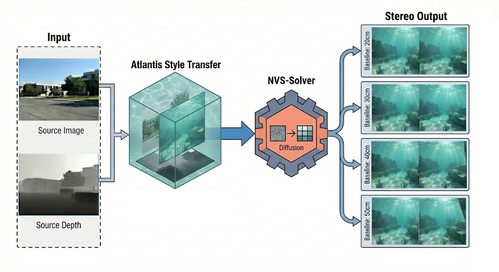
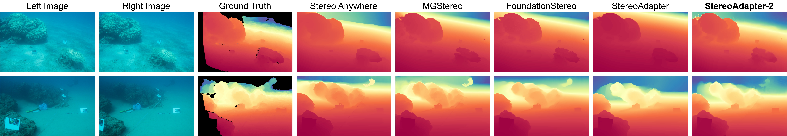

TL;DR: StereoAdapter-2 achieves state-of-the-art underwater stereo depth estimation with a selective state space model.

Conceptual comparison explains how GRU’s complex gating contrasts with Selective SSM’s linear, input-dependent recurrence, inspiring ConvSS2D refinement.

Data synthesis pipeline. Semantic-aware style transfer and geometry-consistent novel view synthesis rendering pipeline for UW-StereoDepth-80K dataset.
Real World Results
Qualitative results of zero-shot underwater stereo depth estimation were obtained by deploying the model on a robotic platform.
Right Camera
Left Camera
Ground Truth
StereoAdapter-2
Simulation Results
Qualitative results of underwater stereo depth estimation on UW-StereoDepth-80K.
Right Camera
Left Camera
Ground Truth
StereoAdapter-2
Method
Detailed architecture of the StereoAdapter-2: Our model iteratively refines disparity by integrating a Mamba Adapter. The refinement step is powered by the ConvSS2D operator, which enables adaptive and long-range spatial information propagation through multi-directional selective scanning.
Benchmark Results
Qualitative results of zero-shot stereo depth estimation for different models on the SQUID dataset.

Qualitative results of zero-shot stereo depth estimation for different models on the TartanAir Ocean dataset
UW-StereoDepth-80K
Example from the high-quality UW-StereoDepth-80K dataset.